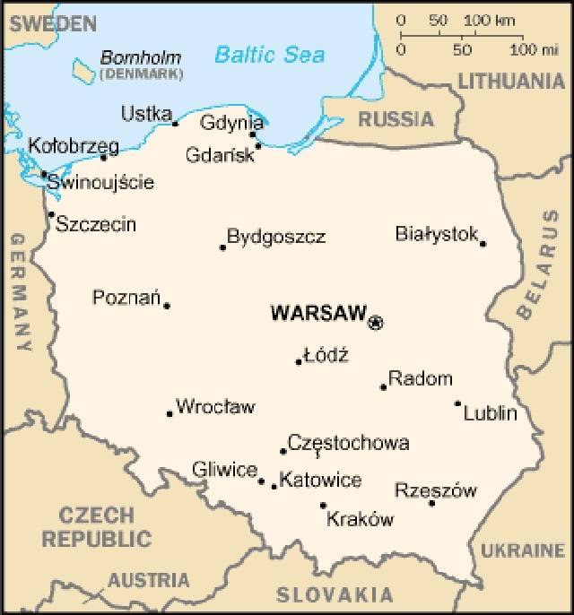
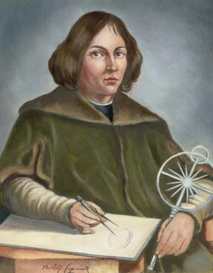

Poland
Our monthly look at English accents from around the world in both English-speaking and non-English-speaking countries. This month: the Polish English accent.
Poland
● Poland (Polska) is a country located in Central Europe. It has borders with many countries, including Germany, the Czech Republic, the Ukraine and Slovakia.
● The capital of Poland is Warsaw.
● The population is approximately 38 million.
● Poland’s first free elections after the fall of the Iron Curtain were in 1990. They were won by Lech Walesa.
● Poland became a member of NATO in 1999.
● Poland became a member of the European Union in 2004.
● Prime Minister: Donald Tusk.
● Recently-deceased president: Lech Kaczynski.

Famous people from Poland
Millions of Polish people have emigrated from their country over the years. So, apart from the many famous Poles from Poland, there are also many Americans and British people of Polish descent who are famous.
● Nicolaus Copernicus (1473-1543) – famous astronomer.
● Frederic Chopin (1810-1849) – musician and composer.
● Marie Curie (1867-1934) – physicist and chemist.
● Lech Walesa (1943) – political activist and co-founder of Solidarity – Poland’s first independent trade union.
● Pope John Paul II (Karol Wojtyla) (1920-2005) – the first Pope of Polish origin.

● Joseph Conrad (1857-1924) – a British subject of Polish origin who wrote many famous books in English, including Heart of Darkness, which was the inspiration for the film Apocalypse Now.
● Michael Anthony Sobolewski (1954) – founding member of the hard rock band Van Halen.
● Sir Arthur John Gielgud (1904-2000) – English actor, director, and producer of Polish origin.
● Helena Rubinstein (1870-1965) – a cosmetics industrialist and founder of Helena Rubinstein, Incorporated.
● Gloria Swanson (1899-1983) – actress of the Silent Era who had Polish ancestry.
Listening
Now sit back and listen to Natalia telling us all about the Polish English accent. ✪